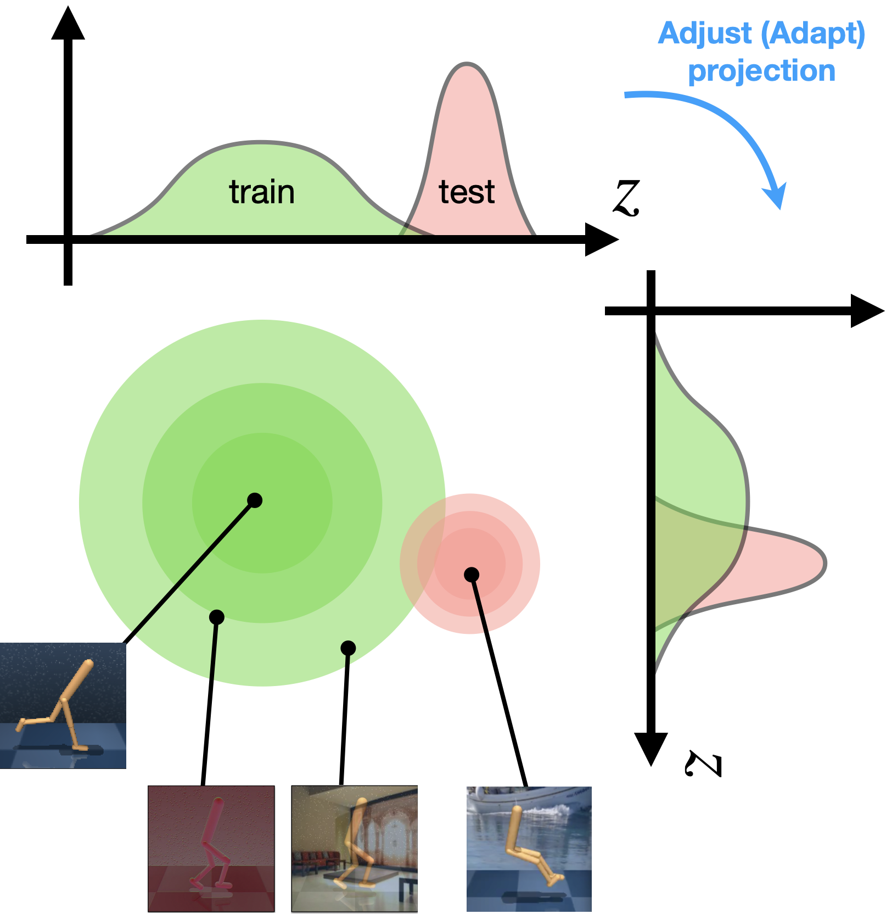
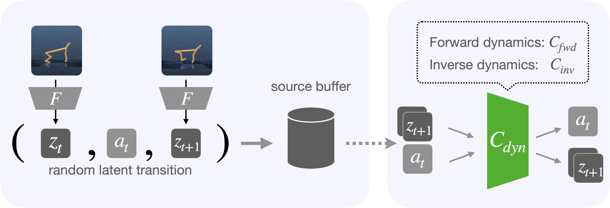
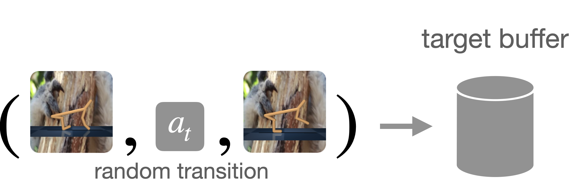
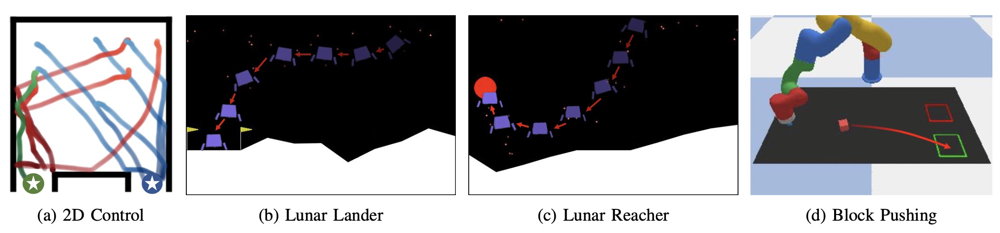
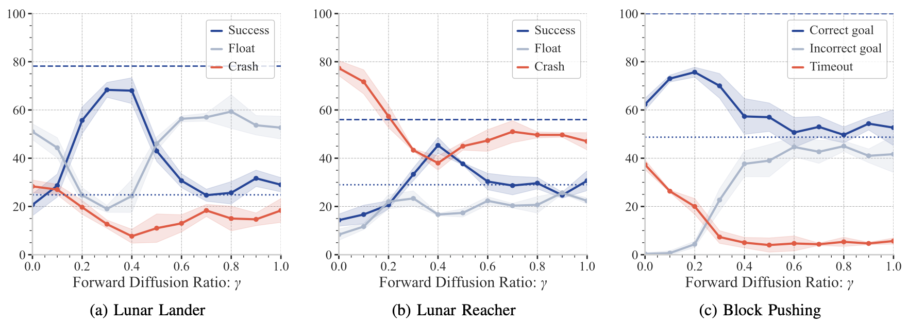
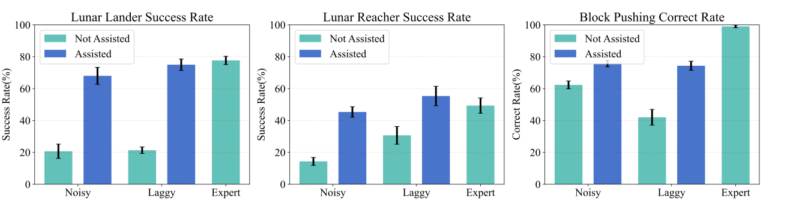

To the Noise and Back:Diffusion for Shared Autonomy
Takuma Yoneda1, Luzhe Sun2, Ge Yang3, Bradly Stadie4, Matthew Walter1
1TTI-Chicago, 2University of Chicago, 3MIT CSAIL, 4Northwestern University
CODE|PAPER
Overview
The diffusion shared autonomy is a method that uses the diffusion model as an inference process to correct the user input to obtain a smooth trajectory and the highest score.
Abstract
Shared autonomy is an operational concept in which a user and an autonomous agent collaboratively control a robotic system. It provides a number of advantages over the extremes of full-teleoperation and full-autonomy in many settings. Traditional approaches to shared autonomy rely on knowledge of the environment dynamics, a discrete space of user goals that is known a priori, or knowledge of the user's policy---assumptions that are unrealistic in many domains. Recent works relax these assumptions by formulating shared autonomy with model-free deep reinforcement learning (RL), and train the agent's policy that produces an action close to that of the user while satisfying value function constraints. These formulations inherently rely on human-in-the-loop training to learn the assistant's policy and, in practice, replace the user with a surrogate policy for the sake of training efficiency. In effect, this trades one difficulty for another. While we no longer need knowledge of the goal space (e.g., that the goals are discrete or constrained), we do need knowledge of a task-specific reward function to train the policy. Unfortunately, such reward specification can be a difficult and brittle process. In this paper, we present a new approach to shared autonomy that employs a modulation of the forward and reverse diffusion process of diffusion models. Our approach does not assume known environment dynamics or the space of user goals, and in contrast to previous work, it does not require any reward feedback, nor does it require access to the user's policy (surrogate or otherwise) during training. Instead, our framework learns a distribution over a potentially multimodal space of desired behaviors. It then employs a diffusion model to adapt the user's actions to a sample from this distribution. Crucially, we show that it is possible to carry out this process in a manner that preserves the user's control authority. We evaluate our framework on a series of challenging continuous control tasks, and analyze its ability to effectively correct user actions while maintaining their autonomy.
Motivation
Pixel-based RL agents are known to be brittle against distractions, due to its large shift in observation space. A typical approach to this issue is to apply data augmentation. This corresponds to expanding the support of the training distribution, as shown in the green circle below.
Training with augmented observations makes the agent more robust against distractions, however, as the target distribution (the pink circle below) goes far away from training, more and more augmentations becomes necessary, which becomes infeasible at some point. 
When we have some knowledge of the target (test) domain, a better approach would be domain adaptation that adapt the agent to the target (test) domain. In this paper, we assume the target domain is accessible except for its reward, and propose Invariance Through Inference (ITI) that performs self-supervised domain adaptation. Specifically, ITI adapts an observation encoder so that the pretrained downstream policy \(\pi(a|z)\) can transfer to the target domain without modification.
We consider that it is the large distribution shift in the latent space that causes a poor performance in the target domain. Our approach attempts to undo this shift, by adapting the encoder based on two objectives: distribution matching and dynamics consistency.
Method
Given an agent pretrained in a source domain, a random policy collects transitions in the source domain. The observations are encoded with pretrained encoder, and the resulting latent transitions \((z_t, a_t, z_{t+1})\) are stored into source buffer.  Succeedingly, we pretrain dynamics networks \(C_\text{dyn}\) using samples from the buffer. \(C_\text{dyn}\) consists of forward dynamics network \(\hat{z}_{t+1} = C_\text{fwd}(z_t, a_t)\) and inverse dynamics network \(\hat{a}_t = C_\text{inv}(z_t, z_{t+1})\). We can think of this step as implicitly encoding the latent transition structure (somewhat like MDP) of the source domain into the weights of these networks.
We also collect random transitions in the target domain. But this time we store transitions with raw observations \((o_t, a_t, o_{t+1})\). 
Once the preprocessing steps described above are completed, the main adaptation step begins. We use sample transitions from source and target buffer, and train encoder \(F\) (intialized to the pretrained weights) and discriminator \(D\) (initialized randomly). * You can download the static version here
{kind=link}
Experiments
We evaluate our algorithm in the context of four shared autonomy environments including a (a) 2D Control task in which an agent navigates to one of two different goals, (b) Lunar Lander that tasks a drone with landing at a designated location, (c) a Lunar Reacher variant in which the objective is to reach a designated region in the environment, and (d) Block Pushing, in which the objective is to use a robot arm to push an object into one of two different goal regions. 
Success/Corect rates for three different environment with different forward diffusion ratio for noisy pilot. In all plots, the dashed blue line denotes the success rate of the expert pilot, while the dotted blue line is the success rate of our model when performing full diffusion (i.e., \(\gamma = 1.0\) on an action sampled from a zero-mean isotropic Gaussian distribution, which we refer to as a Random pilot in the paper. 
Following is the statistics information for 3 environments about different pilots with and without assistance, where we show the results for our chosen value \(\gamma = 0.4\) for Lunar Lander and Lunar Reacher and \(\gamma = 0.2\) for Block Pushing. Each entry corresponds to \(10\) episodes across \(30\) random seeds. 
BibTex
@misc{yoneda2021invariance,
title={Invariance Through Inference},
author={Takuma Yoneda and Ge Yang and Matthew R. Walter and Bradly Stadie},
year={2021},
eprint={2112.08526},
archivePrefix={arXiv},
primaryClass={cs.LG}
}